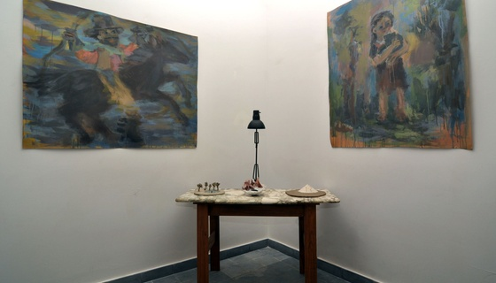

Tanto si el sujeto es un héroe de una historia del oeste salvaje en un libro para niños, o una joven pastora rescatada del imaginario folklórico popular, la re-apropiación de imágenes que hace Mariana Ferrari sirve para congelar la circulación visual a través de sus obras. Las referencias a la representación convencional se transforman y traducen a través de las evocaciones e invenciones de Ferrari. Las imágenes resultantes son a la vez familiares y extrañas, un sistema binario que se extiende a través de los elementos de cada obra. Una sensibilidad intrínseca hacia los materiales genera que cada componente halle su contrapeso, tonos pastel se desprenden de oscuros fondos y los pequeños detalles que definen las formas se disuelven en pesadas pinceladas o áridos matorrales. Usando yeso, acrílico y polvo que ella transforma en un pigmento – Las imágenes finales de Ferrari son producto de un proceso que se realiza directamente en el papel. La naturaleza de estos materiales proporciona la necesidad de trabajar rápidamente, para alterar las relaciones entre la textura / color y contenido / efecto, y permite que cada trabajo contenga tanto su propia alquimia como el tema que representa.
Las escenas de Ferrari, de personajes envueltos en su entorno, demuestran las influencias procedentes de artistas como Fragonard y Francois Boucher, en términos de balance de color y luz y movimiento que surgen de fondos apagados. A través de sus pinturas de gran formato, Ferrari nos acerca el Rococó a nuestra época, y al hacerlo, lo reta, o desestima su reputación como endulzado y delicado.
Frágil podría ser una palabra para referirse a la obra de Rita Flores, aunque inmediatamente cambiamos de opinión y ante lo que aparece moldeado suavemente y con delicadeza por unas manos cándidas, nos surge la palabra fuerte. Porque su obra existe, como al tensar un hilo fino, al proponer, con extrema seguridad, la potencia del gesto simple. Flores, ceramista y escultora, manifiesta con fuerza lo que es suave, con tesón, lo que es libre y azaroso. Venida de Posadas, Misiones, Rita Flores nos enfrenta a los materiales en su esencia, arrojados a una existencia desnuda, sencilla y sobria. Nos presenta una tesis de la suavidad y del gesto en la forma de paisajes despojados.
Creado en Alemania para tocar música religiosa, el bandoneón llego a Argentina de la mano aventurera de marinos e inmigrantes. Desde el otro lado del mar, el sonido melancólico supo acompañar los cantos de las sirenas que enloquecían los viajes de los osados pioneros de la América. Evangelizando el gusto popular el bandoneón se hizo dueño y señor del particular eco del tango rioplatense. Y desde aquella época remota nos llega la profunda resonancia, enmarcada en esta ocasión, en la estampa de Bernardo Ferreyro, Esta vez de solista, Ferreyra nos presenta las adaptaciones Preludio en Re menor e Invención a dos voces en Mi Menor,de J. S. Bach, y Agua y Vino de Egberto Gismonti; y la pieza compuesta para bandoneón Le Valse des Mostres de Yann Tiersen, para seducirnos y perdernos en un océano de graves y agudos.
Originaria de Nueva Orleans, Liza Puglia estudió en institutos culinarios en Nueva York y ahora vive y trabaja en Buenos Aires. Aquí Puglia ha reunido las influencias globales obtenidas en su trabajo como chef privada, así como las de escritora, documentando sus experiencias y recetas en su página web. Mientras estudiaba en el Natural Gourmet Institute de Nueva York, un curso de Wu Xing (la teoria china de los cinco elementos) llevó a Puglia a una comprensión de las interacciones y relaciones entre los fenómenos que ella aplica a su cocina. Puglia cree en el uso de los ingredientes en su pureza para que las personas puedan alcanzar la felicidad a través de lo que comen. Para ella, cuanto más alta es la calidad, mejor la experiencia culinaria, y más positiva la energía que se produce.
- Laura Códega & Kat Sapera
Mayo 2012